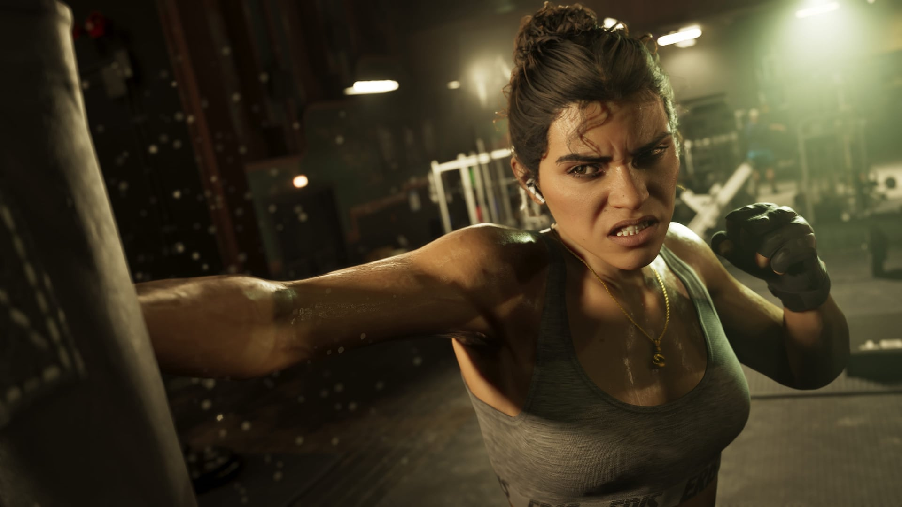
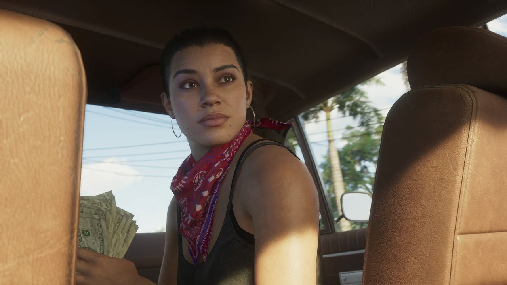
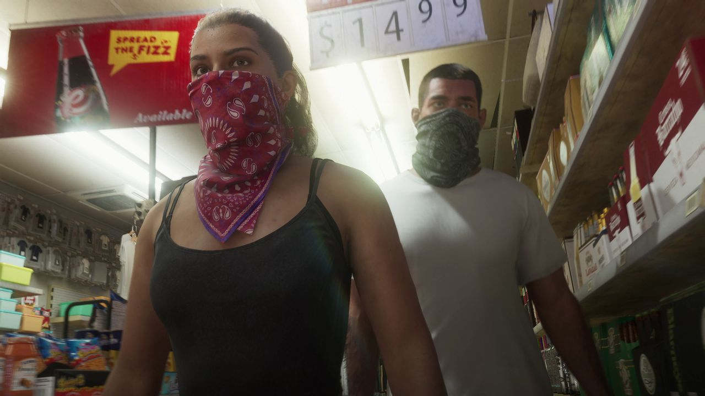
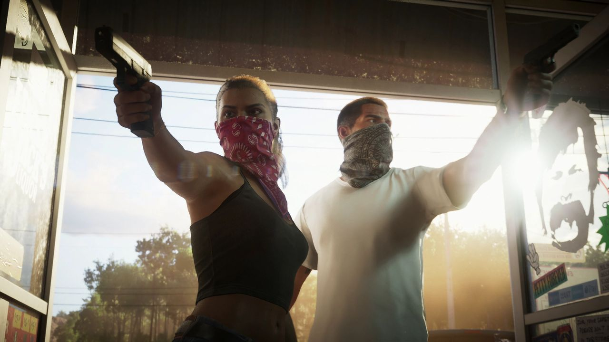
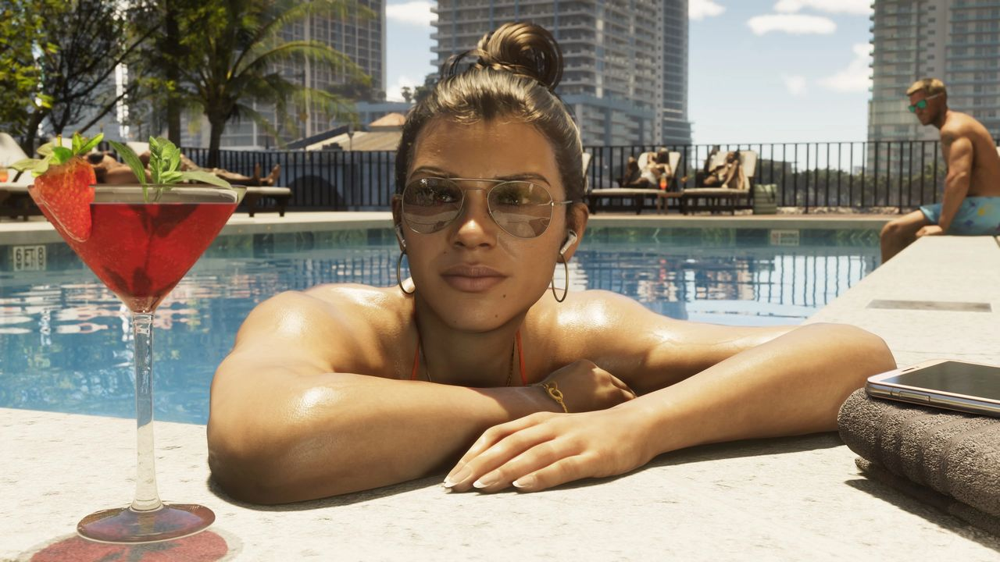
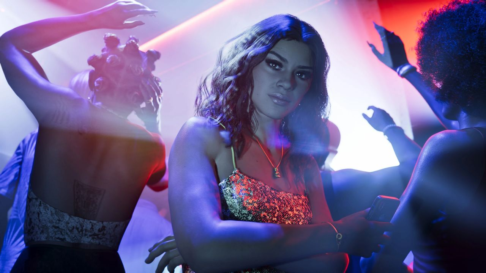
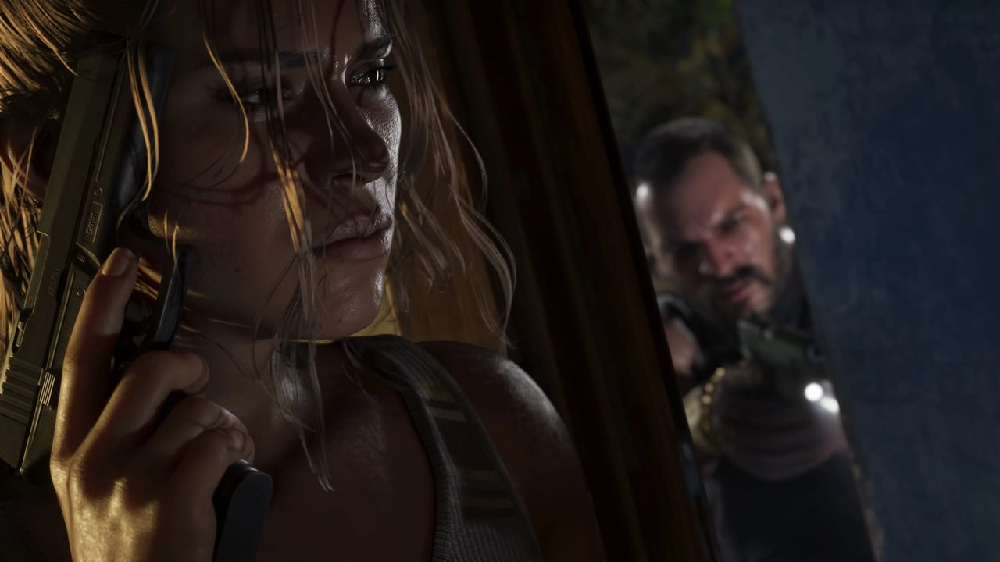
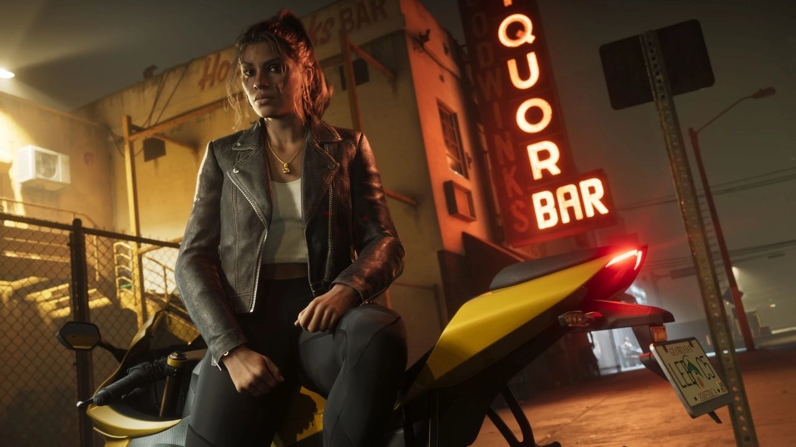

© Rockstar Games / Take-Two Interactive
Lucia Caminos
EN BREF
- Rôle : Protagoniste jouable
- Origine : Née à Liberty City
- Passé : Détenue à la Leonida Penitentiary
- Surnom : « Lu » (utilisé par Jason)
- Entourage : Jason Duval, sa mère
- Véhicule vu : Tulip rouge
- Doublage : Comédienne non encore annoncée officiellement
Lucia Caminos est l'une des deux protagonistes de GTA 6. C'est la première héroïne principale de la série à disposer d'un rôle entièrement doublé. On la décrit souvent, à tort, comme la première protagoniste féminine de GTA : les deux premiers épisodes et GTA Online en proposaient déjà, mais muettes ou optionnelles.
Sa devise, tirée du matériel officiel : « The only thing that matters is who you know and what you got » (« la seule chose qui compte, c'est qui tu connais et ce que tu possèdes »).
Galerie








© Rockstar Games / Take-Two Interactive — images officielles de GTA VI (bandes-annonces, captures, site officiel), via GTA Wiki.
Son histoire selon Rockstar
« Le père de Lucia lui a appris à se battre dès qu'elle a su marcher. » Depuis, la vie ne lui a fait aucun cadeau. C'est en se battant pour sa famille qu'elle a fini à la Leonida Penitentiary, et c'est un pur coup de chance qui l'en a fait sortir. Elle en a tiré une leçon : désormais, uniquement des coups intelligents.
Plus que tout, Lucia veut offrir à sa mère la belle vie dont celle-ci rêve depuis leurs années à Liberty City. Mais au lieu de se contenter de rêves à moitié cuits, elle est prête à prendre les choses en main. Fraîchement sortie de prison, elle voit dans une vie avec Jason une porte de sortie, et elle est déterminée à mettre toutes les chances de son côté, quoi qu'il en coûte.
Apparitions
- Bande-annonce 1 : premières images en détention, entretien avec Stefanie, assistante sociale de la prison, puis braquages avec Jason.
- Bande-annonce 2 : sortie de prison, scènes à Vice City ; elle porte un t-shirt du Gellhorn International Raceway.
- Extended Look : fuite par la fenêtre de l'appartement d'Aunt Tee pendant une descente de police, mission de sécurité pour Valentina.
Inspiration
Comme Jason, Lucia s'inscrit dans la lignée de Bonnie et Clyde (inspiration déjà utilisée par la série pour Catalina, dans GTA III et San Andreas). Dans une interview à LOVE Magazine, la scénariste de Rockstar Alexa D'Agostino explique s'être inspirée de personnes qu'elle connaît, dont sa propre mère, qui l'a élevée pour être « turbulente, gentille, mais sans se laisser marcher dessus ».